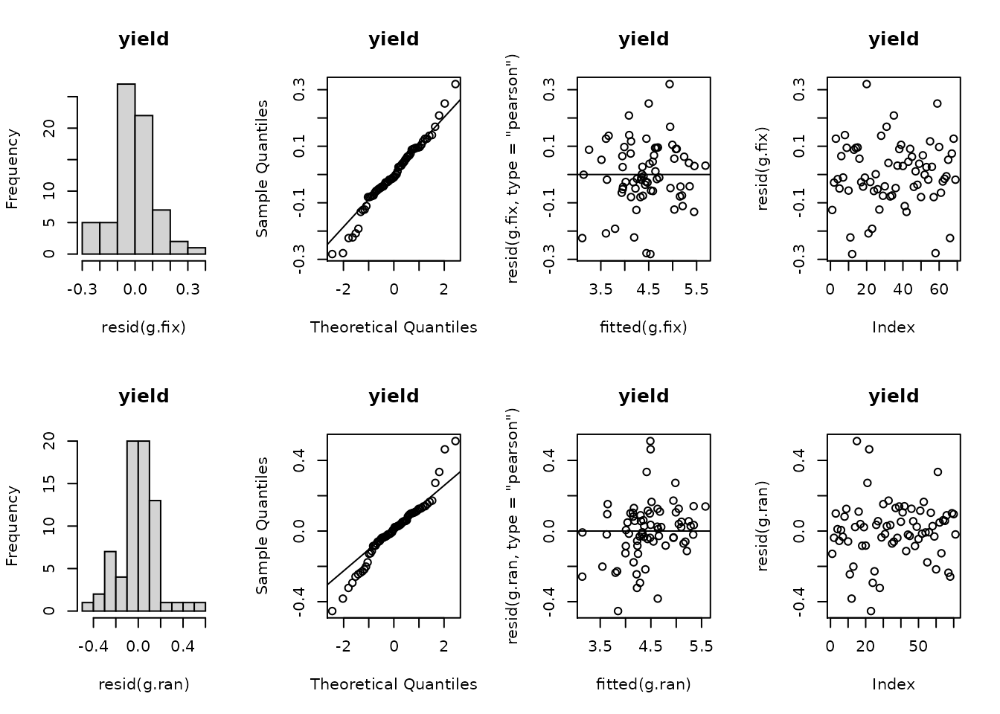

Broad-sense heritability in plant breeding
Maria Belen Kistner & Flavio Lozano-Isla
Source:vignettes/heritability.Rmd
heritability.RmdBroad-sense heritability (\(H^2\))
Broad-sense heritability (\(H^2\)) is defined as the proportion of phenotypic variance that is attributable to an overall genetic variance for the genotype (Schmidt et al., 2019b). There are usually additional interpretations associated with \(H^2\): (i) It is equivalent to the coefficient of determination of a linear regression of the unobservable genotypic value on the observed phenotype; (ii) It is also the squared correlation between predicted phenotypic value and genotypic value; and (iii) It represents the proportion of the selection differential (\(S\)) that can be realized as the response to selection (\(R\)) (Falconer and Mackay, 2005).
There are two main reasons why heritability on an entry-mean basis is of interest in plant breeding (Schmidt et al., 2019a):
- It is plugged into the breeder’s Equation to predict the response to selection.
- It is a descriptive measure used to assess the usefulness and precision of results from cultivar evaluation trials.
Usual Problems
In practice, most trials are conducted in a multienvironment trial (MET) presente unbalanced data as not all cultivars are tested at each environment or simply when plot data is lost or when the number of replicates at each location varies between genotypes (Schmidt et al., 2019b). However, the standard method for estimating heritability implicitly assumes balanced data, independent genotype effects, and homogeneous variances.
How calculate the Heritability?
According Schmidt et al. (2019a), the variance components could be calculated in two ways:
1) Two stages approach
For the two stage approach, in the first stage each experiment is analyzed individually according their experiment design (Lattice, CRBD, etc) (Zystro et al., 2018). And for the second stage environments are denotes a year-by-location interaction. This approach assumes a single variance for genotype-by-environment interactions (GxE), even when multiple locations were tested across multiple years (Buntaran et al., 2020).
Differentes heritability calculations
| Standart | Cullis | Piepho |
|---|---|---|
| \(H^2=\frac{\sigma_g^2}{\sigma_p^2}=\frac{\Delta G}{S}\) | \(H_{Cullis}^2=1-\frac{\overline{V}_{\Delta..}^{^{BLUP}}}{2\cdot\sigma_g^2}\) | \(H_{Piepho}^2=\frac{\sigma_g^2}{\sigma_g^2+\frac{\overline{V}_{\Delta..}^{BLUE}}{2}}\) |
Heritability function in the package
For calculate the standard heritability in MET experiments the number of location and replication should be include manually in the function H2cal(). In the case of difference number of replication in each experiments, take the maximum value (often done in practice) (Schmidt et al., 2019b).
For remove the outliers the function implemented is the Method 4 used for Bernal-Vasquez et al. (2016): Bonferroni-Holm using re-scaled MAD for standardizing residuals (BH-MADR).
H2cal function
dt <- potato
hr <- H2cal(data = dt
, trait = "stemdw"
, gen.name = "geno"
, rep.n = 5
, fixed.model = "0 + (1|bloque) + geno"
, random.model = "1 + (1|bloque) + (1|geno)"
, emmeans = TRUE
, plot_diag = TRUE
, outliers.rm = TRUE
)
Model information
hr$model %>% summary()
## Linear mixed model fit by REML ['lmerMod']
## Formula: stemdw ~ 1 + (1 | bloque) + (1 | geno)
## Data: dt.rm
## Weights: weights
##
## REML criterion at convergence: 796.1
##
## Scaled residuals:
## Min 1Q Median 3Q Max
## -2.38440 -0.64247 -0.08589 0.57452 2.84508
##
## Random effects:
## Groups Name Variance Std.Dev.
## geno (Intercept) 19.960 4.4677
## bloque (Intercept) 0.110 0.3316
## Residual 9.411 3.0677
## Number of obs: 148, groups: geno, 15; bloque, 5
##
## Fixed effects:
## Estimate Std. Error t value
## (Intercept) 12.51 1.19 10.51Variance components
hr$tabsmr %>% kable(caption = "Variance component table")| trait | rep | geno | env | year | mean | std | min | max | V.g | V.e | V.p | repeatability | H2.s | H2.p | H2.c |
|---|---|---|---|---|---|---|---|---|---|---|---|---|---|---|---|
| stemdw | 5 | 15 | 1 | 1 | 12.59867 | 4.749994 | 2.818 | 22.302 | 19.96002 | 9.410932 | 21.84221 | 0.913828 | 0.913828 | 0.9502395 | 0.9533473 |
Best Linear Unbiased Estimators (BLUEs)
hr$blues %>% kable(caption = "BLUEs")| geno | stemdw | SE | df | lower.CL | upper.CL |
|---|---|---|---|---|---|
| G01 | 15.73200 | 1.030325 | 119.7830 | 13.6919903 | 17.77201 |
| G02 | 10.12100 | 1.030325 | 119.7830 | 8.0809903 | 12.16101 |
| G03 | 9.69500 | 1.030325 | 119.7830 | 7.6549903 | 11.73501 |
| G04 | 15.17700 | 1.030325 | 119.7830 | 13.1369903 | 17.21701 |
| G05 | 12.87106 | 1.086433 | 122.5189 | 10.7204483 | 15.02167 |
| G06 | 22.30200 | 1.030325 | 119.7830 | 20.2619903 | 24.34201 |
| G07 | 2.81800 | 1.030325 | 119.7830 | 0.7779903 | 4.85801 |
| G08 | 10.42300 | 1.030325 | 119.7830 | 8.3829903 | 12.46301 |
| G09 | 15.66800 | 1.030325 | 119.7830 | 13.6279903 | 17.70801 |
| G10 | 9.24200 | 1.030325 | 119.7830 | 7.2019903 | 11.28201 |
| G11 | 6.42500 | 1.030325 | 119.7830 | 4.3849903 | 8.46501 |
| G12 | 16.11100 | 1.030325 | 119.7830 | 14.0709903 | 18.15101 |
| G13 | 14.62900 | 1.030325 | 119.7830 | 12.5889903 | 16.66901 |
| G14 | 16.29700 | 1.030325 | 119.7830 | 14.2569903 | 18.33701 |
| G15 | 11.46900 | 1.030325 | 119.7830 | 9.4289903 | 13.50901 |
Best Linear Unbiased Predictors (BLUPs)
hr$blups %>% kable(caption = "BLUPs")| geno | stemdw |
|---|---|
| G01 | 15.587018 |
| G02 | 10.228658 |
| G03 | 9.821839 |
| G04 | 15.057007 |
| G05 | 12.843686 |
| G06 | 20.631268 |
| G07 | 3.254483 |
| G08 | 10.517060 |
| G09 | 15.525899 |
| G10 | 9.389236 |
| G11 | 6.699074 |
| G12 | 15.948953 |
| G13 | 14.533681 |
| G14 | 16.126578 |
| G15 | 11.515963 |
Outliers
hr$outliers$fixed %>% kable(caption = "Outliers fixed model")| bloque | geno | stemdw | resi | res_MAD | rawp.BHStud | index | adjp | bholm | out_flag | |
|---|---|---|---|---|---|---|---|---|---|---|
| 68 | IV | G05 | 80.65 | 60.36709 | 18.84505 | 0 | 68 | 0 | 0 | OUTLIER |
hr$outliers$random %>% kable(caption = "Outliers random model")| bloque | geno | stemdw | resi | res_MAD | rawp.BHStud | index | adjp | bholm | out_flag | |
|---|---|---|---|---|---|---|---|---|---|---|
| 68 | IV | G05 | 80.65 | 61.39925 | 18.886677 | 0.0000000 | 68 | 0.0000000000 | 0.0000000 | OUTLIER |
| 100 | IV | G06 | 33.52 | 12.02340 | 3.698449 | 0.0002169 | 100 | 0.0002169207 | 0.0323212 | OUTLIER |